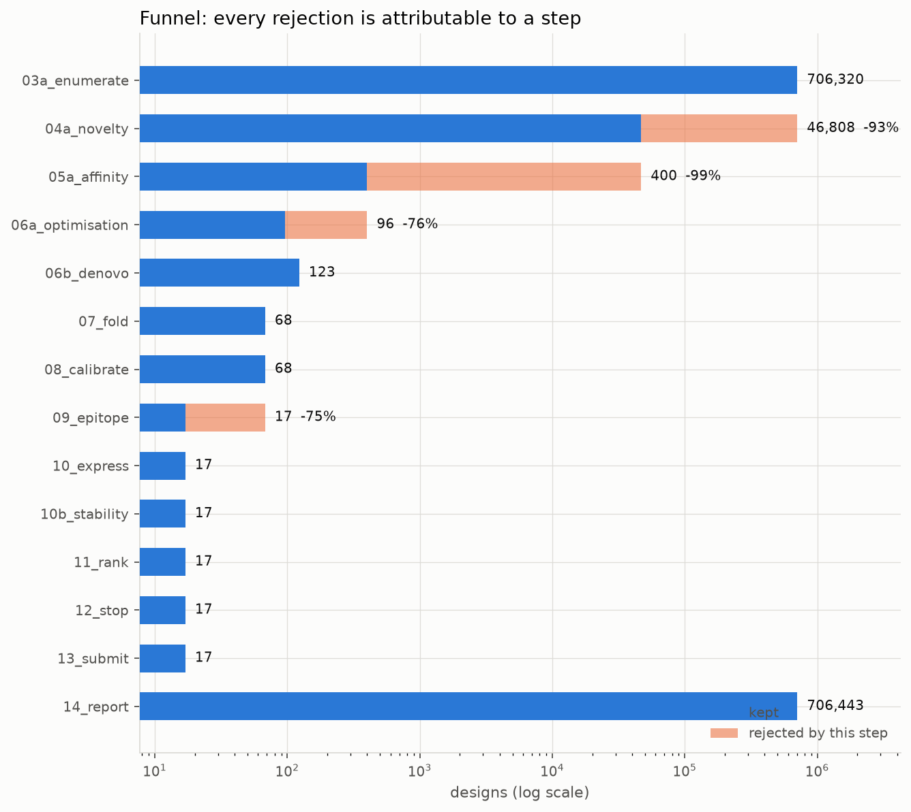
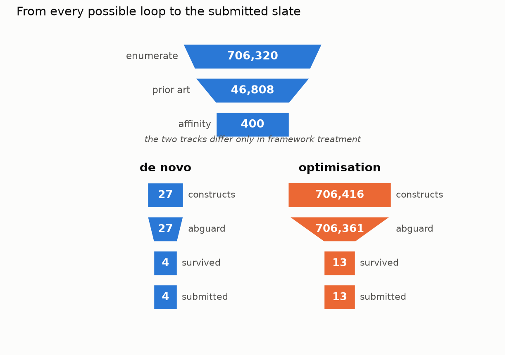
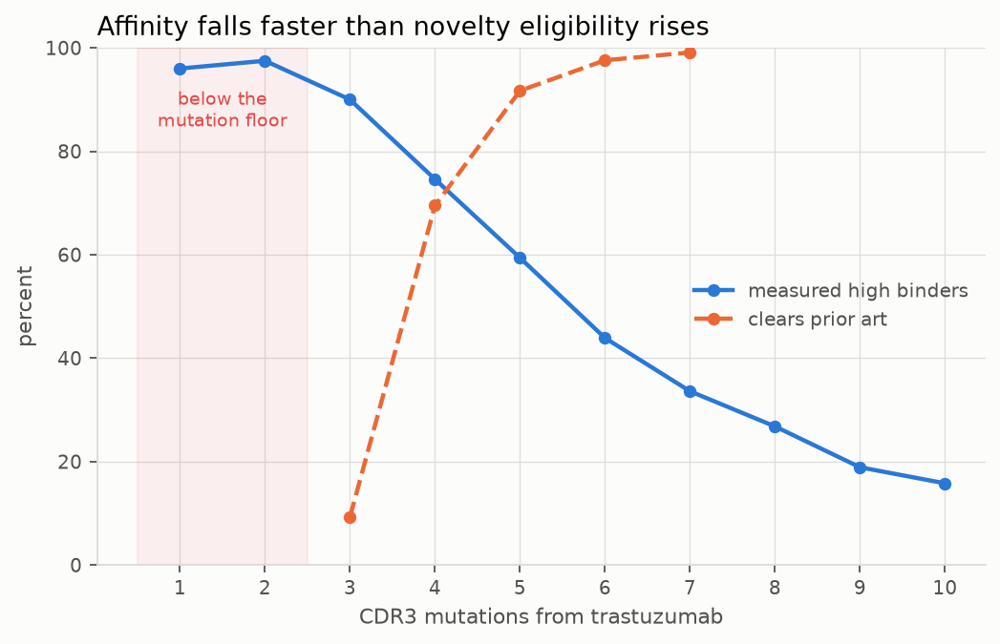
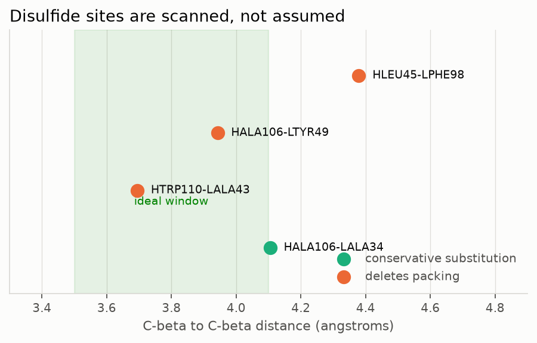
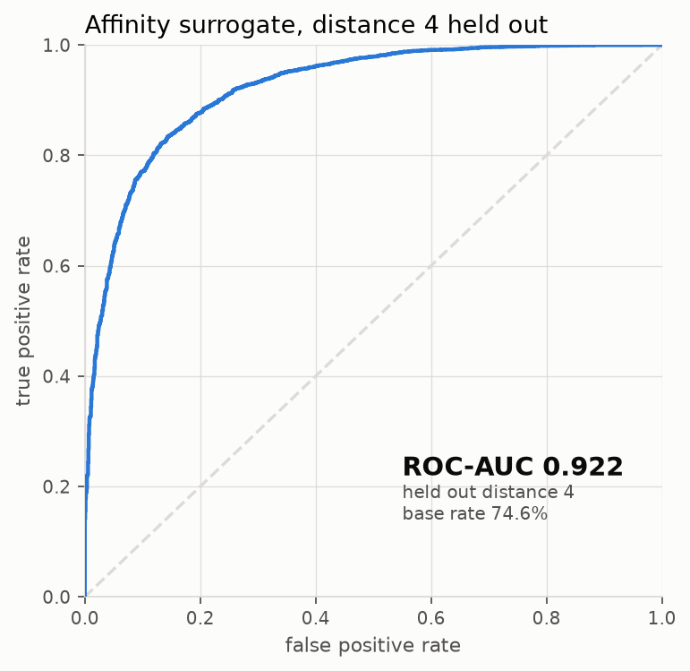
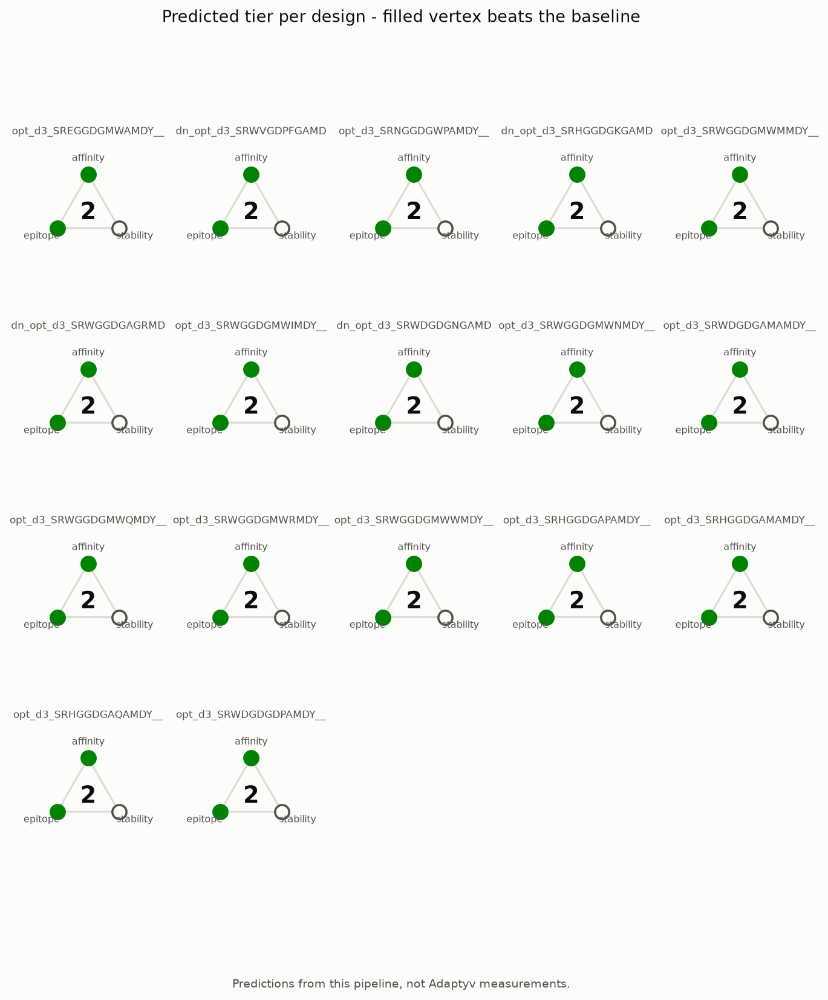

Every number below was produced by the run that wrote this page. Thresholds are recorded beside the counts they produced.
Steps that did not run: 02_guard, 03b_rfd4. Figures and columns that depend on them are absent, not estimated.
| # | design | CDR3 (IMGT) | mutations | P(high) | package | track |
|---|---|---|---|---|---|---|
| 1 | opt_d3_SREGGDGMWAMDY__native | SREGGDGMWAMDY | W3E,F8M,Y9W | 0.995 | native | optimisation |
| 2 | dn_opt_d3_SRWVGDPFGAMDY__native_m14 | SRWVGDPFGAMDY | G4V,G7P,Y9G | 0.995 | mpnn_framework | de_novo |
| 3 | opt_d3_SRNGGDGWPAMDY__native | SRNGGDGWPAMDY | W3N,F8W,Y9P | 0.995 | native | optimisation |
| 4 | dn_opt_d3_SRHGGDGKGAMDY__native_m45 | SRHGGDGKGAMDY | W3H,F8K,Y9G | 0.995 | mpnn_framework | de_novo |
| 5 | opt_d3_SRWGGDGMWMMDY__native | SRWGGDGMWMMDY | F8M,Y9W,A10M | 0.994 | native | optimisation |
| 6 | dn_opt_d3_SRWGGDGAGRMDY__native_m50 | SRWGGDGAGRMDY | F8A,Y9G,A10R | 0.994 | mpnn_framework | de_novo |
| 7 | opt_d3_SRWGGDGMWIMDY__native | SRWGGDGMWIMDY | F8M,Y9W,A10I | 0.996 | native | optimisation |
| 8 | dn_opt_d3_SRWDGDGNGAMDY__native_m54 | SRWDGDGNGAMDY | G4D,F8N,Y9G | 0.994 | mpnn_framework | de_novo |
| 9 | opt_d3_SRWGGDGMWNMDY__native | SRWGGDGMWNMDY | F8M,Y9W,A10N | 0.995 | native | optimisation |
| 10 | opt_d3_SRWDGDGAMAMDY__native | SRWDGDGAMAMDY | G4D,F8A,Y9M | 0.995 | native | optimisation |
| 11 | opt_d3_SRWGGDGMWQMDY__native | SRWGGDGMWQMDY | F8M,Y9W,A10Q | 0.995 | native | optimisation |
| 12 | opt_d3_SRWGGDGMWRMDY__native | SRWGGDGMWRMDY | F8M,Y9W,A10R | 0.995 | native | optimisation |
| 13 | opt_d3_SRWGGDGMWWMDY__native | SRWGGDGMWWMDY | F8M,Y9W,A10W | 0.995 | native | optimisation |
| 14 | opt_d3_SRHGGDGAPAMDY__native | SRHGGDGAPAMDY | W3H,F8A,Y9P | 0.995 | native | optimisation |
| 15 | opt_d3_SRHGGDGAMAMDY__native | SRHGGDGAMAMDY | W3H,F8A,Y9M | 0.994 | native | optimisation |
| 16 | opt_d3_SRHGGDGAQAMDY__native | SRHGGDGAQAMDY | W3H,F8A,Y9Q | 0.994 | native | optimisation |
| 17 | opt_d3_SRWDGDGDPAMDY__native | SRWDGDGDPAMDY | G4D,F8D,Y9P | 0.994 | native | optimisation |
| step | in | out | sec | notes |
|---|---|---|---|---|
| 01_baseline | 0 | 0 | 0.0 | KD 0.152 nM; contacts at IMGT [3, 7, 8, 9] at 5.0 A; best disulfide site ALA106(H)-ALA34(L) at 4.11 A |
| 03a_enumerate | 0 | 706,320 | 0.0 | 823,080 loops in the complete space; 116,760 removed for unpaired cysteine |
| 04a_novelty | 706,320 | 46,808 | 0.0 | 4,037,480,786 pairs compared; pigeonhole skipped 366,810,184,654 provably distant pairs |
| 05a_affinity | 46,808 | 400 | 0.0 | held out distance 4 entirely: ROC-AUC 0.922 against a 74.6% base rate |
| 06a_optimisation | 400 | 96 | 0.0 | 96 loops x 1 packages; no viable disulfide site in the geometry window |
| 06b_denovo | 96 | 123 | 0.0 | T=0.4: 48 proposals; T=0.5: 48 proposals; 27 de novo designs under 0.7 identity, 69 rejected above it. Track is confirmed by abguard, never asserted here. |
| 07_fold | 68 | 68 | 0.0 | boltz2 scored 69, openfold3 scored 69; no spread measured, both models unavailable; baseline control folded: True; no-template control: 69 scored |
| 08_calibrate | 68 | 68 | 0.0 | cutoff 0.951 at 5.0% FPR on 8,190 measured non-binders; AUC 0.645, NOT used as a filter - ipTM does not separate binders from non-binders well enough here to drop designs on it |
| 09_epitope | 68 | 17 | 0.0 | 68/68 refolds found; 0 disulfides confirmed closed; native epitope 7 HER2 residues at 5.0 A; threshold 0.900 - 90% of the baseline's own recovery (1.000), measured by the same model in this run |
| 10_express | 17 | 17 | 0.0 | ran: abguard_liability. Aggrescan 3D, SoluProt and NetSolP skipped: external web services, not enabled. ProteinMPNN soluble weights unavailable on Nebius. |
| 10b_stability | 17 | 17 | 0.0 | 17 designs scored; 3 beat the baseline log-likelihood of -1.0571. A rank, not a Tm. |
| 11_rank | 17 | 17 | 0.0 | 4 loop families represented |
| 12_stop | 17 | 17 | 0.0 | kept 17 of 17; no design fell below the threshold |
| 13_submit | 17 | 17 | 0.0 | wrote submission.csv with 17 designs after 1 validation pass(es); abguard: compliant |
| 14_report | 706,443 | 706,443 | 0.0 | wrote report.html with 6 figures |





